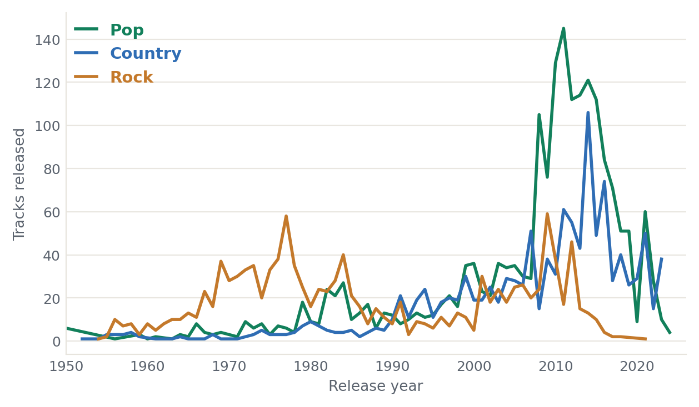
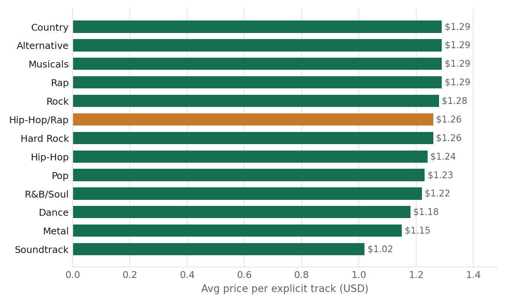
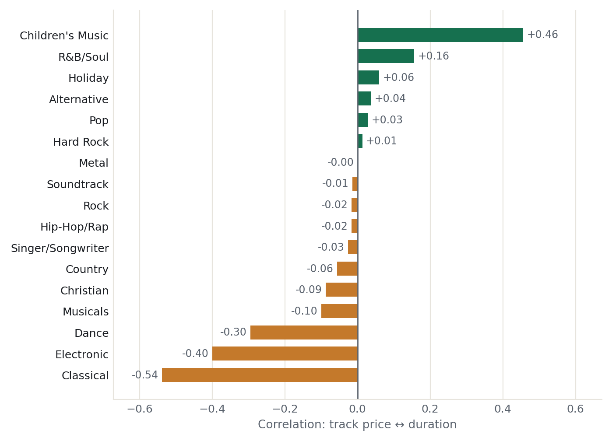
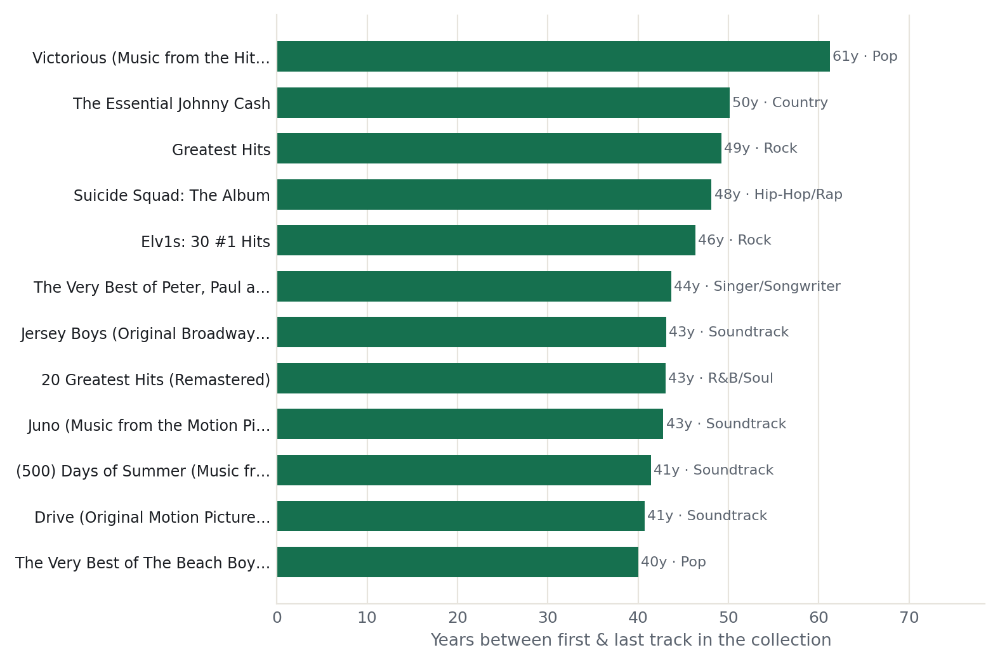
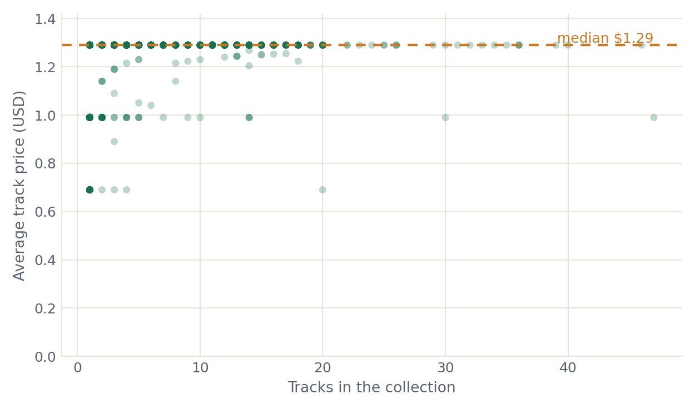
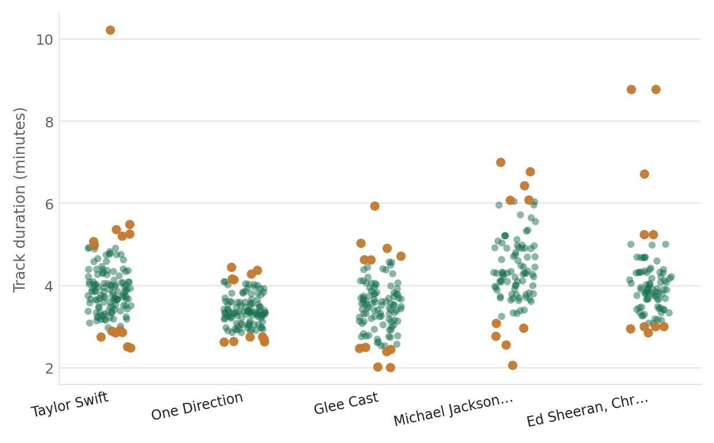

An exploratory deep-dive into a catalogue of Apple Music tracks. Eight questions answered entirely in PostgreSQL, then visualised. Every query is one click away under its chart.
PostgreSQLPython · matplotlib8 research questionsData via Kaggle
8,741
tracks analysed cleaned from ~10K
57
genres
1,694
artists
2,778
collections
14%
explicit
1939–2024
release span
How the data was prepared
The raw Kaggle set ships ~10,000 rows. I pared it to 8,741 clean records: kept the US / USD catalogue and songs only, dropped rows missing a genre, artist, date or duration, and de-duplicated on trackId. A handful of 1900-01-01 placeholder dates are filtered out of the time-series.
Every mainstream genre inflects upward through the 2000s. Pop and Country surge hardest in the 2010s, while Rock peaks far earlier, the 1970s–80s, then recedes. (The 18 placeholder 1900 dates are excluded.)

Tracks released per year · top 3 genres by volume+ View SQL
SELECT "primaryGenreName" AS genre,
EXTRACT(year FROM "releaseDate")::int AS yr,
COUNT("trackId") AS tracks
FROM apple_music_dataset
WHEREEXTRACT(year FROM "releaseDate") > 1900 -- drop placeholder datesGROUP BY 1, 2
ORDER BY 1, 2;
02
Do explicit tracks cost more in some genres?
Barely. Explicit prices sit in a tight $1.02–$1.29 band. These are Apple's fixed price tiers, not genre premiums. Hip-Hop/Rap (highlighted) lands mid-table at $1.26, despite its cultural weight.

Avg. price per explicit track, by genre (≥ 5 explicit tracks)+ View SQL
SELECT "primaryGenreName" AS genre,
ROUND(SUM("trackPrice") / COUNT("trackId")::decimal, 2) AS avg_price,
COUNT("trackId") AS n
FROM apple_music_dataset
WHERE "trackExplicitness" = 'explicit'
GROUP BY 1
HAVINGCOUNT("trackId") >= 5
ORDER BY avg_price DESC;
03
How has genre popularity shifted by era?
Pop's dominance is recent: 990 tracks in the 2010s alone. Rock ruled the 1970s (335); Hip-Hop/Rap and Alternative only scale up after 2000. Track counts read as a density heatmap.
SELECT "primaryGenreName" AS genre,
(FLOOR(EXTRACT(year FROM "releaseDate") / 10) * 10)::int AS decade,
COUNT("trackId") AS tracks
FROM apple_music_dataset
WHEREEXTRACT(year FROM "releaseDate") > 1900
GROUP BY 1, 2;
04
Is a track's price related to its length?
For most genres, price and duration are uncorrelated (~0). The exceptions are telling: Children's Music trends pricier-when-longer (+0.46), while Classical is the mirror image (−0.54): long classical pieces are the cheapest. Computed with Postgres's corr() aggregate.

Pearson correlation of price ↔ duration, per genre (≥ 25 tracks)+ View SQL
SELECT "primaryGenreName" AS genre,
corr("trackPrice", "trackTimeMillis") AS price_duration_corr,
COUNT(*) AS n
FROM apple_music_dataset
WHERE "trackPrice" > 0 AND "trackTimeMillis" IS NOT NULLGROUP BY 1
HAVINGCOUNT(*) >= 25
ORDER BY price_duration_corr;
05
Which collections span the most years?
The widest-spanning "collections" are all greatest-hits and soundtrack compilations: The Essential Johnny Cash (50 yrs), Elv1s: 30 #1 Hits (46), and film soundtracks, where a single collectionId bundles music recorded decades apart.

Years between a collection's first & last track · top 12+ View SQL
WITH collection_span AS (
SELECT "collectionId",
MAX("collectionName") AS name,
MAX("releaseDate")::date - MIN("releaseDate")::date AS span_days
FROM apple_music_dataset
WHEREEXTRACT(year FROM "releaseDate") > 1900
GROUP BY "collectionId"
HAVINGCOUNT(*) >= 2
)
SELECT name, ROUND(span_days / 365.0, 1) AS span_years
FROM collection_span
ORDER BY span_days DESCLIMIT 12;
06
Do singles and collection tracks price differently?
Hardly. A track sold alone averages $1.24; inside a collection, $1.18, a few cents apart. Most of the catalogue (7,039 tracks) lives inside ~1,076 multi-track collections, at ~6–7 tracks each.
Category
Tracks
Avg price
Collections
Tracks / collection
Collection
7,039
$1.18
1,076
6.5
Single
1,702
$1.24
1,702
1.0
+ View SQL
WITH categorized AS (
SELECT "collectionId",
CASE WHENCOUNT("trackId") = 1 THEN 'Single'
ELSE 'Collection' ENDAS kind
FROM apple_music_dataset
GROUP BY "collectionId"
)
SELECT c.kind,
COUNT(*) AS tracks,
ROUND(AVG("trackPrice"), 2) AS avg_price,
COUNT(DISTINCT a."collectionId") AS collections
FROM apple_music_dataset a
JOIN categorized c ON a."collectionId" = c."collectionId"
GROUP BY c.kind
ORDER BY tracks DESC;
07
Does a bigger collection mean cheaper tracks?
No relationship at all. Whether a collection holds 1 track or 47, its average price is flat, with points banding along $1.29 / $0.99 / $0.69, the fixed tiers surfacing again.

Each point = one collection · median price marked+ View SQL
SELECT "collectionId",
COUNT("trackId") AS tracks_in_collection,
AVG("trackPrice") AS avg_price
FROM apple_music_dataset
WHERE "trackPrice" > 0
GROUP BY "collectionId";
08
Which tracks are duration outliers?
Among the five most-prolific artists, most tracks cluster at 3–4 minutes. The clearest outlier: Taylor Swift's "All Too Well (10 Minute Version)" at 10.2 min, caught by a per-artist 5th / 95th-percentile filter (percentile_cont).

Track duration by artist · orange = beyond 5th/95th percentile+ View SQL
WITH top_artists AS (
SELECT "artistId", MAX("artistName") AS name, COUNT(*) AS n
FROM apple_music_dataset GROUP BY "artistId"
ORDER BY n DESCLIMIT 5
),
bounds AS (
SELECT "artistId",
percentile_cont(0.95) WITHIN GROUP (ORDER BY "trackTimeMillis") AS p95,
percentile_cont(0.05) WITHIN GROUP (ORDER BY "trackTimeMillis") AS p05
FROM apple_music_dataset GROUP BY "artistId"
)
SELECT t.name, a."trackName",
ROUND(a."trackTimeMillis" / 60000.0, 1) AS minutes
FROM apple_music_dataset a
JOIN top_artists t ON t."artistId" = a."artistId"
JOIN bounds b ON b."artistId" = a."artistId"
WHERE a."trackTimeMillis" > b.p95 OR a."trackTimeMillis" < b.p05;
Takeaways
Two themes run through the catalogue. Pricing is structural, not editorial: tracks snap to Apple's $0.69 / $0.99 / $1.29 tiers regardless of genre, length, or how they're bundled. And the catalogue skews modern: release volume explodes after 2000, led by Pop, even as its "collections" quietly bundle decades of back-catalogue under single albums.
The whole analysis runs on PostgreSQL (CTEs, window functions, corr(), and percentile_cont), with Python only for the charts. The Python and notebook are in the repository.